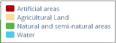
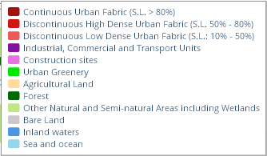
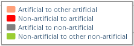

Attributes provided for visualization in the tool are values already aggregated for analytical units.
There are two options from where these values can originate:
They can be either uploaded to the application already in aggregated form (as statistics), or they can be calculated directly in the application, using GIS overlays of source spatial datasets with analytical units.
Arbitrary thematic types of attributes can be analyzed in the application, however, for PUMA purposes two different attribute types have been incorporated:
Particular attributes available for analysis differ between different scopes and themes of analysis. Attributes with identical meanings and names can occur, but they are often based on different sources for each scope of analysis (e.g. urban areas, population, etc.).
Land cover based attributes
This type of attribute is essential and typical for the PUMA platform. It originates in land cover-based analysis and basically represents areas of different land cover classes (or land cover change classes) aggregated for analytical units. In general, there are two groups of land cover-based attributes: status and change. Different levels of aggregation can be used for these classes.
Land cover classes – aggregated

Land cover classes – detailed

Land cover change flows:
